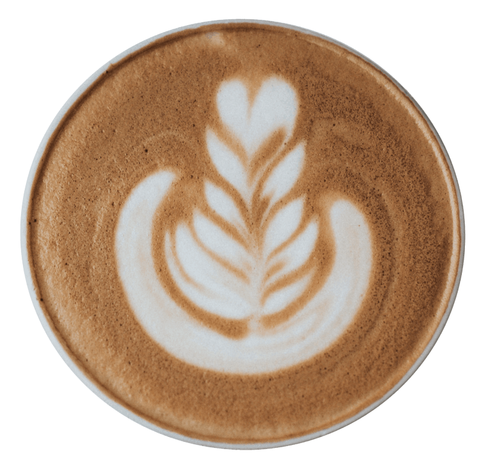

Welcome to
Kopi Dua Darjat!
Kopi warisan sentuhan artisan.
A kopi kampung brand but dressed up in a more modern way.

Kopi warisan sentuhan artisan.
A kopi kampung brand but dressed up in a more modern way.
Kopi Dua Darjat was founded in Malaysia by a group of coffee enthusiasts who wanted to bring high-quality,
sustainably sourced coffee to their customers.
The company started as a small coffee shop in a village in Malaysia
and has since grown to become a well-known brand with multiple locations across the country.
Kopi Dua Darjat prides itself on using only the best beans,
roasting them in small batches to bring out the unique flavors and aromas,
and creating a welcoming atmosphere for customers to enjoy their coffee.
At Kopi Dua Darjat, our mission is to provide our customers with the best coffee experience possible.
We are committed to sourcing only the highest quality beans from sustainable and ethical sources,
roasting them to perfection, and serving them with a smile.
We strive to create a warm and welcoming environment where our customers can relax, enjoy their coffee,
and connect with friends and family.
Our vision at Kopi Dua Darjat is to be the leading coffee brand in Malaysia,
known for our commitment to quality, sustainability, and customer service.
We aim to expand our reach across the country and beyond,
while staying true to our values and maintaining the personal touch that sets us apart.
We envision a future where everyone can enjoy a great cup of coffee,
while also supporting a company that cares about the planet and its people.
Kopi warisan sentuhan artisan.
©2023 Kopi Dua Darjat by Darjat Ventures